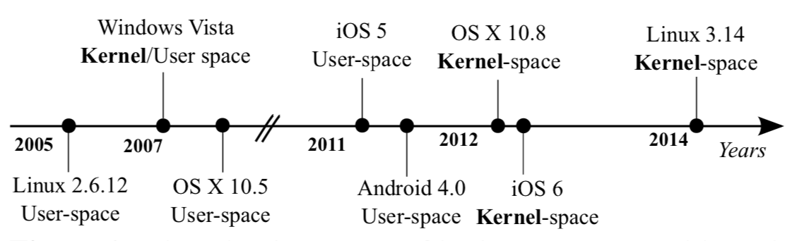

我们都知道，操作系统为进程提供了虚拟的内存(进程不可见、不可调的虚拟内存映射，能把每一个虚拟地址的访问转换成物理地址的访问)，让进程仿佛独占整个内存。
那么问题来了：进程眼中的内存到底长什么样呢？为了回答这个问题，就回到“什么是程序”上——程序的执行需要内存里有什么？顺着这个思路，不难得到地址空间里应该有的东西：
char *，然后修改它)，例如全局变量(在全局作用域定义的int x;)，以及动态分配内存的区域(例如malloc()的返回值)。除此之外，现代操作系统还玩了一个非常有趣的小trick：操作系统的代码和数据也映射到进程的地址空间中，只是进程无权访问。
这么做有非常明显的好处：当进程请求操作系统运行(系统调用)或中断到来时，不需要切换就能执行操作系统代码，而操作系统代码执行后就能直接访问进程的地址空间(例如我们执行read(fd, buf, size)的时候，操作系统代码立即就能访问buf)。通过硬件的访问权限管理，进程一旦访问属于操作系统的内存，就会触发非法操作，由操作系统杀死。
虽然我们都觉得这么做很安全也提高了性能，但偏偏硬件还有漏洞。有兴趣的同学可以看看Spectre和Meltdown的故事，课程会在操作系统安全部分回到这个话题。
回到进程眼中的内存：无论是代码、数据、bss、堆区、栈区、操作系统……这些空间通常都是连续的，想办法把它们排在地址空间里就行了。操作系统也为我们提供了工具，查看某个地址空间：
./a.out & // 后台运行一个程序 pmap $! // 使用pmap命令查看进程地址空间信息
例如，一个静态链接的C程序的pmap输出结果：
0000000000400000 728K r-x-- a.out 00000000006b6000 24K rw--- a.out 00000000006bc000 4K rw--- [ anon ] 0000000000fa4000 140K rw--- [ anon ] 00007ffed8844000 132K rw--- [ stack ] 00007ffed8928000 12K r---- [ anon ] 00007ffed892b000 8K r-x-- [ anon ] ffffffffff600000 4K r-x-- [ anon ]
如果想自己实现一个pmap，我们可以用ltrace/ptrace把它“拆开”，看看它到底做了什么获得了进程的地址空间信息：
$ strace pmap $!
...
openat(AT_FDCWD, "/proc/2078/maps", O_RDONLY) = 3
fstat(3, {st_mode=S_IFREG|0444, st_size=0, ...}) = 0
read(3, "00400000-004b6000 r-xp 00000000 "..., 1024) = 614
经过一些观察，不难发现是procfs里有这个信息！感谢Everything is a file，procfs把操作系统内进程的信息作为文件暴露给了操作系统的其他部分。这样我们也可以实现一个自己的pmap了。言归正传，procfs里提供的maps信息，比pmap还要多一些：
00400000-004b6000 r-xp 00000000 08:02 2359313 /tmp/a.out 006b6000-006bc000 rw-p 000b6000 08:02 2359313 /tmp/a.out 006bc000-006bd000 rw-p 00000000 00:00 0 00fa4000-00fc7000 rw-p 00000000 00:00 0 [heap] 7ffed8844000-7ffed8865000 rw-p 00000000 00:00 0 [stack] 7ffed8928000-7ffed892b000 r--p 00000000 00:00 0 [vvar] 7ffed892b000-7ffed892d000 r-xp 00000000 00:00 0 [vdso] ffffffffff600000-ffffffffff601000 r-xp 00000000 00:00 0 [vsyscall]
不难理解(和验证)的是：
在数据区之后，我们一个猜测是006bc000-006bd000一段匿名区域是bss节，它的大小(内存映射以页面为单位，刚好一个页面)和位置(位于数据节之后)刚好符合。
我们可以使用一些系统工具(例如readelf)，或者自己写程序来验证上述猜测(例如利用end符号)。有兴趣的同学不妨试试。
对于动态链接程序，也是类似的，只是每一个动态链接库都有代码、数据、bss，但进程中只有一个堆区和一个堆栈：
55dd6c01b000-55dd6c01c000 r-xp 00000000 08:02 2359313 /tmp/a.out 55dd6c21b000-55dd6c21c000 r--p 00000000 08:02 2359313 /tmp/a.out 55dd6c21c000-55dd6c21d000 rw-p 00001000 08:02 2359313 /tmp/a.out 7fc8ca48e000-7fc8ca675000 r-xp 00000000 08:02 5772000 /lib/x86_64-linux-gnu/libc-2.27.so 7fc8ca675000-7fc8ca875000 ---p 001e7000 08:02 5772000 /lib/x86_64-linux-gnu/libc-2.27.so 7fc8ca875000-7fc8ca879000 r--p 001e7000 08:02 5772000 /lib/x86_64-linux-gnu/libc-2.27.so 7fc8ca879000-7fc8ca87b000 rw-p 001eb000 08:02 5772000 /lib/x86_64-linux-gnu/libc-2.27.so 7fc8ca87b000-7fc8ca87f000 rw-p 00000000 00:00 0 7fc8ca87f000-7fc8ca8a6000 r-xp 00000000 08:02 5771988 /lib/x86_64-linux-gnu/ld-2.27.so 7fc8caa91000-7fc8caa93000 rw-p 00000000 00:00 0 7fc8caaa6000-7fc8caaa7000 r--p 00027000 08:02 5771988 /lib/x86_64-linux-gnu/ld-2.27.so 7fc8caaa7000-7fc8caaa8000 rw-p 00028000 08:02 5771988 /lib/x86_64-linux-gnu/ld-2.27.so 7fc8caaa8000-7fc8caaa9000 rw-p 00000000 00:00 0 7ffe38768000-7ffe38789000 rw-p 00000000 00:00 0 [stack] 7ffe38795000-7ffe38798000 r--p 00000000 00:00 0 [vvar] 7ffe38798000-7ffe3879a000 r-xp 00000000 00:00 0 [vdso] ffffffffff600000-ffffffffff601000 r-xp 00000000 00:00 0 [vsyscall]
非常有趣的是，堆区和bss节都没有了！当然其实还是有的。如果我们声明足够大的内存空间，地址空间里就会有bss和堆区，例如在静态/动态时各分配1GB的内存后的地址空间后pmap的结果(pmap的结果对人类更友好一些)：
0000556e701c2000 4K r-x-- a.out 0000556e703c2000 4K r---- a.out 0000556e703c3000 4K rw--- a.out 0000556e703c4000 1048576K rw--- [ anon ] # bss 0000556eb0899000 132K rw--- [ anon ] # heap 00007ff0fb664000 1048580K rw--- [ anon ] # another heap 00007ff13b665000 1948K r-x-- libc-2.27.so 00007ff13b84c000 2048K ----- libc-2.27.so 00007ff13ba4c000 16K r---- libc-2.27.so 00007ff13ba50000 8K rw--- libc-2.27.so 00007ff13ba52000 16K rw--- [ anon ] 00007ff13ba56000 156K r-x-- ld-2.27.so 00007ff13bc68000 8K rw--- [ anon ] 00007ff13bc7d000 4K r---- ld-2.27.so 00007ff13bc7e000 4K rw--- ld-2.27.so 00007ff13bc7f000 4K rw--- [ anon ] 00007ffed7608000 132K rw--- [ stack ] 00007ffed7722000 12K r---- [ anon ] 00007ffed7725000 8K r-x-- [ anon ] ffffffffff600000 4K r-x-- [ anon ]
在这个例子里我们还看到，heap的内存是不连续的——有一部分被标记为了传统的UNIX heap，但1GB的内存空间实际是在地址空间的另外的位置分配的。
请阅读Malloc Internals：
mmap() is used to request memory directly from the operating system. Note that the threshold for mmap'ing is dynamic, unless overridden by M_MMAP_THRESHOLD (see mallopt() documentation), and there may be a limit to how many such mappings there can be at one time.此外因为bss里刚好是1GB的内存，因此bss恰好是1048576KB；但malloc/free需要额外记录分配信息，因此分配了多一页的(1048580KB)内存。
多次运行同一个程序，你会发现地址空间中各个部分的地址大体相同(处于同一范围)，但具体的值每次都不同，例如多次运行ldd：
$ ldd ./a.out
linux-vdso.so.1 (0x00007ffe335bc000)
libc.so.6 => /lib/x86_64-linux-gnu/libc.so.6 (0x00007fe0a408f000)
/lib64/ld-linux-x86-64.so.2 (0x00007fe0e4682000)
$ ldd ./a.out
linux-vdso.so.1 (0x00007fffc7dcb000)
libc.so.6 => /lib/x86_64-linux-gnu/libc.so.6 (0x00007f4354ac6000)
/lib64/ld-linux-x86-64.so.2 (0x00007f43950b9000)
$ ldd ./a.out
linux-vdso.so.1 (0x00007ffc90bf3000)
libc.so.6 => /lib/x86_64-linux-gnu/libc.so.6 (0x00007f7046bd2000)
/lib64/ld-linux-x86-64.so.2 (0x00007f70871c5000)
甚至每次运行程序，代码/数据加载的位置也都不同(静态链接除外)。这是称为“Address Space Layout Randomization”的机制，能够降低缓冲区溢出攻击的成功概率，主流的操作系统在进入2000s之后都开始支持ASLR，甚至Linux内核本身的地址也是随机化的——内核中的这些问题一直都是“越狱”漏洞的重要来源。
/proc/kallsyms有内核所有符号的地址，通过这个地址你可以看到内核是如何实现地址空间随机化的。

有兴趣的同学可以继续阅读一些资料，其中提供了很多有趣的参考文献。
操作系统应该如何提供API，使得进程能够管理自己的地址空间呢？我们不妨考虑一些典型的场景：
dlopen() (在crepl实验中用过)，将一个文件的一部分内容加载到进程的地址空间中ulimit可以设置进程的堆栈为“无限大”，从而在程序运行过程中，大量的函数调用(例如上亿次递归)时访问的栈地址能被正确分配malloc(32); - 分配一段很小的内存malloc(1024 * 1024 * 1024); - 分配一段非常大的内存系统为我们提供了mmap系统调用(和相应的munmap)：
void *mmap(void *addr, size_t length, int prot, int flags, int fd, off_t offset);
首先让我们来回顾一下操作系统中的对象。所谓对象，就是对数据(和操作)的封装——对象数据的部分通常可以看做是一个数组，例如C中的一个结构体，而这些对象都可以通过文件被访问。Everything is a file提供了统一的接口，实现应用程序访问操作系统中的对象，而对文件来说最重要的操作就是read和write。
mmap把文件中的一部分(由fd文件描述符描述，从offset开始的length字节)“映射”到地址空间的addr位置，并设置保护权限为prot、映射模式为flags。

一个API就实现了几乎所有的内存管理功能：
MAP_ANONYMOUS flag (不指定地址)，则相当于内存分配。mmap可以用来分配很大的内存，大家不妨在自己的机器上试一试，借助分页机制，map和物理内存一样大的空间瞬间就能完成。以下程序把磁盘磁盘的128GB空间以只读的方式映射到地址空间里。即便只有8GB的物理内存，映射依然在瞬间完成，并且读取第一个扇区的内容，能够读出引导块的0x55 0xaa magic number——这真的是我们的磁盘！
int main() { // BUG: no error checking int fd = open("/dev/sda", O_RDONLY); uint8_t *disk = mmap(NULL, 137438953472LL, PROT_READ, MAP_SHARED, fd, 0); printf("mapped address = %p\n", disk); for (int i = 0; i < 512; i++) { printf("%02x ", disk[i]); } }
现代系统中的mmap是通过分页机制实现的。原则上，初始时，操作系统实际上并不需要为进程分配任何内存(在分页机制中标记进程地址空间中的所有地址均为不可访问)，只需要记住进程的地址空间映射关系即可，例如：
0000000000400000 728K r-x-- a.out 00000000006b6000 24K rw--- a.out 00000000006bc000 4K rw--- a.out bss 0000000000fa4000 140K rw--- [ heap ] 00007ffed8844000 132K rw--- [ stack ]
当进程访问任何内存时，都会发生MMU异常(对x86系统来说，是Page Fault)，操作系统能捕获这个异常，并且进入操作系统代码执行。此时，操作系统代码能够找到异常地址对应的内存映射，例如：
400000附近的地址，a.out执行代码6bc000附近的地址，a.out的bss每一个地址都能被“翻译”成某个操作系统对象中的一段内存——此时我们只需要分配一个新的页面、调用read系统调用，将文件的内容写入、并且将新的页面重新映射进进程的地址空间，从异常返回即可。因此，mmap系统调用在实现时，并不需要实际映射任何内容，只需要更新操作系统内部的地址空间映射关系即可。如此，我们即便映射128GB的磁盘，或是分配8GB的物理内存，都只需要瞬间就能完成了。在Linux操作系统中，内存映射关系是用红黑树(区间树)维护的排序集合实现的，能够在的时间内进行一次地址翻译。
没错，区间树用来管理内存区域再合适不过了。所以不再抱怨问题求解课学的东西没用了吧？
在实际的系统中，情况往往会更复杂一些。在之前我们简单的进程模型里，每个进程都有独立的地址空间，因此fork的时候地址空间是“完全复制”的。但在有了分页机制、虚拟存储和mmap后，我们发现fork的实现可以更高效一些——我们只要复制进程的内存映射，并且把父子进程的地址空间都标记成只读。此时，如果父子进程不再写入内存，就不会产生任何page fault，并且系统能够完全正确地运行。如果任何一方写入内存，都会引发缺页，缺页时把这一页面拷贝一份，把父子进程“分开”访问即可。
基于分页机制，操作系统有一套完整、复杂的虚拟内存管理。copy-on-write的机制中也有一些有趣的细节，详细内容请仔细阅读教科书。
 加入我们
加入我们